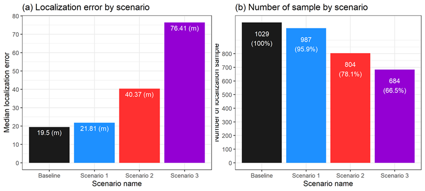
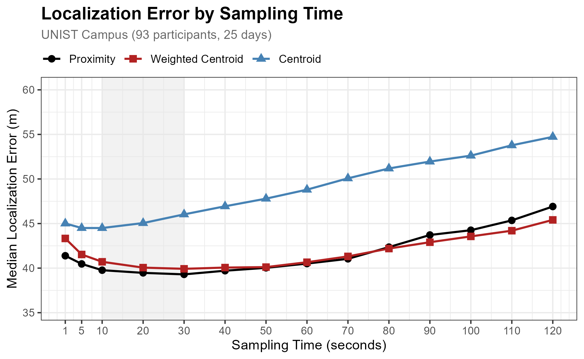

pacman::p_load(tidyverse, lubridate)7 Location
Before counting or tracking devices, we must know where each device is. This chapter shows how to assign positions to WiFi detections—a foundational step that feeds into all downstream analyses.
WiFi sensors report detections, not coordinates: “device X was seen at time T with signal strength S.” When coverage areas overlap, the same device appears in multiple sensor logs simultaneously. Localization consolidates these scattered detections into a single position estimate per time window.
This requires two decisions:
- Temporal resolution: How often to update a device’s location? Every second captures fine-grained movement but amplifies noise; every minute smooths trajectories but misses quick stops.
- Spatial resolution: When multiple sensors detect the same device, which location to assign? Pick the strongest signal (Proximity), or compute a weighted average (Centroid).
7.1 Setup
Prepare data
Download our sample dataset to follow along, or use your own WiFi detection data: sample_loc.zip (15 KB). The ZIP contains three files: wifi.csv (WiFi detections for one device), gps.csv (GPS ground truth), and sensors.csv (sensor coordinates).
NoteAbout the sample dataset
Period: October 23 – November 17, 2019 — a single device tracked over 26 days.
Location: UNIST campus, Ulsan, South Korea. 25 outdoor sensors in projected coordinates (UTM zone 52N).
Data structure:
| File | Rows | Columns |
|---|---|---|
wifi.csv |
~47,000 | source_address, timestamp, sensor_name, rssi |
gps.csv |
~3,000 | source_address, timestamp, x, y |
sensors.csv |
25 | sensor_name, x_sensor, y_sensor |
How we prepared this sample (see scripts/4-0-prep.R):
- Selected the device with most detections from the full dataset
- Hashed MAC address (SHA-256) for privacy
- Converted RSSI to standard negative dBm values
- Exported sensor coordinates in UTM projection
This sample demonstrates the localization workflow on a single trajectory.
Load packages and data
Load required packages:
Load the data files:
wifi_raw <- read_csv("../data/sample_loc/wifi.csv", show_col_types = FALSE) |>
mutate(timestamp = ymd_hms(timestamp))
sensor_locations <- read_csv("../data/sample_loc/sensors.csv", show_col_types = FALSE)
TipPreview loaded data
WiFi data — probe request detections with signal strength:
head(wifi_raw, 3) source_address timestamp sensor_name rssi
1 a3c7f9e2b1d4... 2019-10-23 08:15:32 sensor_104_back -67
2 a3c7f9e2b1d4... 2019-10-23 08:15:33 sensor_104_back -71
3 a3c7f9e2b1d4... 2019-10-23 08:15:35 sensor_112_side -82source_address: SHA-256 hashed device identifiertimestamp: Detection time (second precision)sensor_name: Which sensor detected this devicerssi: Signal strength in dBm (closer to zero = stronger signal)
Sensors — physical coordinates in UTM zone 52N:
head(sensor_locations, 3) sensor_name x_sensor y_sensor
1 sensor_104_back 372891.2 3939842.1
2 sensor_112_side 372845.7 3939763.4
3 sensor_206_front 372812.5 3939845.87.2 Workflow
The localization workflow has three steps: create time windows, aggregate detections by sensor, and assign each window to a location. We use 20-second windows with Proximity (strongest signal wins); see Section 7.4 for the rationale.
Time windows
Group detections into fixed intervals. All detections within the same 20-second window will be aggregated together:
sampling_window <- 20 # seconds
wifi_windowed <- wifi_raw |>
mutate(
time_window = floor_date(timestamp, paste(sampling_window, "seconds"))
)Aggregate
Within each time window, sum RSSI values per sensor. Summing rather than averaging rewards sensors that detected the device more frequently—a proxy for sustained proximity:
wifi_aggregated <- wifi_windowed |>
group_by(source_address, time_window, sensor_name) |>
summarise(
rssi_sum = sum(rssi),
weight = sum(100 + rssi),
n_detections = n(),
.groups = "drop"
) |>
left_join(sensor_locations, by = "sensor_name")The weight column converts negative RSSI to positive values (adding 100) for weighted centroid calculations.
Assign location
Pick the sensor with strongest cumulative signal (Proximity method):
wifi_located <- wifi_aggregated |>
group_by(source_address, time_window) |>
slice_max(rssi_sum, n = 1, with_ties = FALSE) |>
ungroup() |>
select(source_address, time_window, sensor_name, x_sensor, y_sensor)
head(wifi_located) source_address time_window sensor_name x_sensor y_sensor
1 a3c7f9e2b1d4... 2019-10-23 08:15:20 sensor_104_back 372891.2 3939842.1
2 a3c7f9e2b1d4... 2019-10-23 08:15:40 sensor_104_back 372891.2 3939842.1
3 a3c7f9e2b1d4... 2019-10-23 08:16:00 sensor_112_side 372845.7 3939763.4Each row is now one device at one location for one time window—ready for counting or tracking.
TipAlternative: Weighted Centroid
Proximity assigns devices to discrete sensor locations. If you need continuous coordinates for mapping or distance calculations, compute a weighted average of all detecting sensors:
wifi_centroid <- wifi_aggregated |>
group_by(source_address, time_window) |>
summarise(
x_est = sum(x_sensor * weight, na.rm = TRUE) / sum(weight, na.rm = TRUE),
y_est = sum(y_sensor * weight, na.rm = TRUE) / sum(weight, na.rm = TRUE),
.groups = "drop"
)\[ x_{est} = \frac{\sum_{i} w_i \cdot x_i}{\sum_{i} w_i} \]
where \(w_i = 100 + RSSI_i\) (adding 100 converts negative RSSI to positive weights).
7.3 Sensor spacing
Sensor spacing matters more than localization method. When sensors are too far apart, devices pass through gaps undetected—and no algorithm can compensate for missing data.
We tested this by progressively removing sensors from our campus deployment:

Detection and accuracy both degrade beyond 100m spacing:

NoteInterpreting sensor spacing results
| Spacing | Sensors | Detection Rate | Median Error |
|---|---|---|---|
| ~50m | 25 | 100% | ~20m |
| ~100m | 12 | 96% | ~25m |
| ~150m | 6 | 78% | ~40m |
| ~320m | 4 | 67% | ~60m |
The jump from 100m to 150m is where coverage breaks down. At ~50m spacing, we detected every device with ~20m median error. Doubling to ~100m barely affected performance. But beyond that, accuracy degraded rapidly: at ~150m spacing, we missed 22% of devices and error doubled.
Recommendation: Keep sensors within 100m of each other. If budget forces wider spacing, accept that you’ll miss significant pedestrian traffic—and counts will underestimate accordingly.
7.4 Method selection
Two parameters require decisions: time window length and localization method. Our validation shows neither dramatically affects accuracy—sensor density matters far more.
Time window
Window length trades off temporal resolution against estimation stability. Short windows (1–10s) capture fine-grained movement but produce noisy estimates; long windows (1–3min) yield stable estimates but blur movement patterns.
We tested windows from 1 to 120 seconds against GPS ground truth:

NoteInterpreting time window results
All three methods (Proximity, Weighted Centroid, Centroid) show similar ~40m median error regardless of window length. Accuracy differences within the 10–30 second range are negligible.
We default to 20 seconds as a reasonable balance:
- Short enough to capture movement between locations
- Long enough to aggregate multiple detections for stable estimates
- Aligns well with typical pedestrian pace (~1.4 m/s = 28m in 20s)
Localization method
We recommend Proximity (assign to strongest sensor) over Centroid (weighted average):
- Both achieve similar accuracy in our tests
- Proximity is simpler: one line of code, no tuning
- Output is directly interpretable—each detection maps to a single sensor
- Works well for discrete location analyses (counting at specific points, OD matrices between sensors)
NoteMore on localization methods
Li et al. (2021) categorize IoT localization methods by complexity and accuracy:

For low-cost outdoor deployments with sparse sensor networks, only Proximity and Centroid are practical. Methods requiring precise timing (ToA, TDoA) or dense arrays (fingerprinting) demand hardware beyond typical WiFi sensing setups.
Reference: Li, You, et al. Toward location-enabled IoT (LE-IoT). IEEE Internet of Things Journal, 2020, 8.6: 4035-4062.